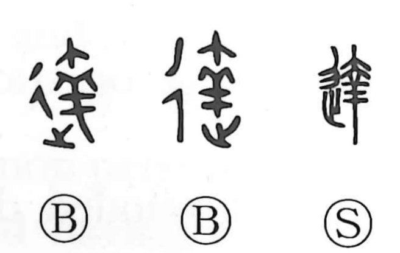

達

Kun: tachi | On: tatsu
reach ・ attain ・ pass through ・ pierce ・ realize
Explanation
達 is a phono-semantic character. Its semantic side is the “walk/go” radical 辶, while its phonetic, read tatsu, is the ancient form 羍, a depiction of a lamb dropping at birth beneath the ewe’s hips, shown as 大. This lively image of a newborn slipping out swiftly and cleanly gives the character the core sense of unhindered movement. In the Book of Odes (Major Odes, Sheng Min), the line 先生如達, “Her first-born came forth like a lamb,” uses 達 to mean smoothly, without trouble. From this idea of proceeding without obstruction, the character came to mean to pass through and to pierce, and by extension to reach, arrive at, and ultimately to realize or become aware.